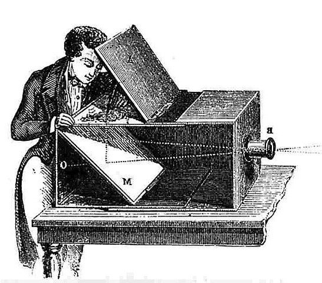

Звезде немих филмова су умеле да се изражавају без речи, користећи руке и изразе лица на помало пренаглашен начин.
Открићем звучних филмова 1927. године све се променило. Многи глумци који су имали изражен страни нагласак или пискаве гласове остали су без посла, као на пример Џон Гилберт (1899 – 1936), неприкосновена звезда немог филма или Пољакиња Пола Негри (1897 – 1987).
Многи филмски уметници снимали су прво слику, а звук додавали накнадно. Касније су се досетили да микрофоне сакрију у декору, али је и та идеја имала један пропуст, глумци нису смели много да се померају. Тек кад су микрофоне окачили о нарочите пецаљке које микромани померају, као што се и данас ради, звучни филмови су снимани без тешкоћа.
У почетку, филмови су били кратки, неми (безвучни) и црно-бели. Унапређењем технологије, унапређен је и филм. Крајем 20. века настали су први филмови савремене технологије који делује реалније у односу на њихове претходнике. У тешким и опасним сценама ангажовани су каскадери, а експлозије су намештене помоћу специјалних ефеката. У постпродукцији су неки делови компјутерски обрађивани. Тако је филм унапређен и модернизован. Један од првих оваквих филмова је "Кинг Конг" (1933.) у коме је лутка гориле величине 60 cm анимација и рачунарском обрадом изгледала већа од Њујоршких солитера.
Први филм настао је пре више од стотину година. Филм је био нијем и црно-бијели. Његови творци су браћа Лимијер. Први филм приказан је у Паризу, 28. децембра 1895. године. Трајао је свега неколико минута и представљао је долазак воза на железничку станицу. Приликом пројекције људи су, видевши да им воз иде у сусрет, почели да вриште и беже по сали, не знајући да је то само пројектовано на платну. Исти филм је у Србији приказан шест месеци касније, 1896. године у кафани браће Савић код зграде албаније, „Код златног крста“.
За прво српско филмско остварење проглашен је филм под називом Живот и дела Бесмртног Вожда Карађорђа у режији Чича Илије Станојевића.